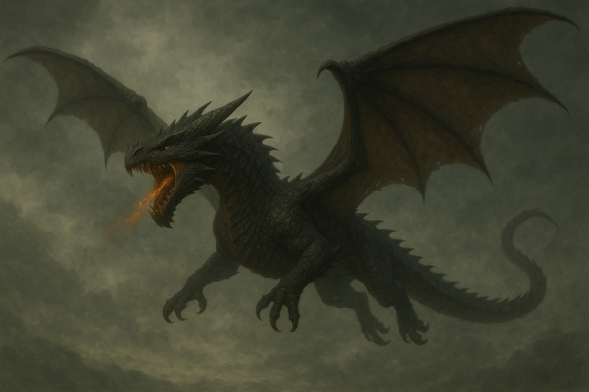
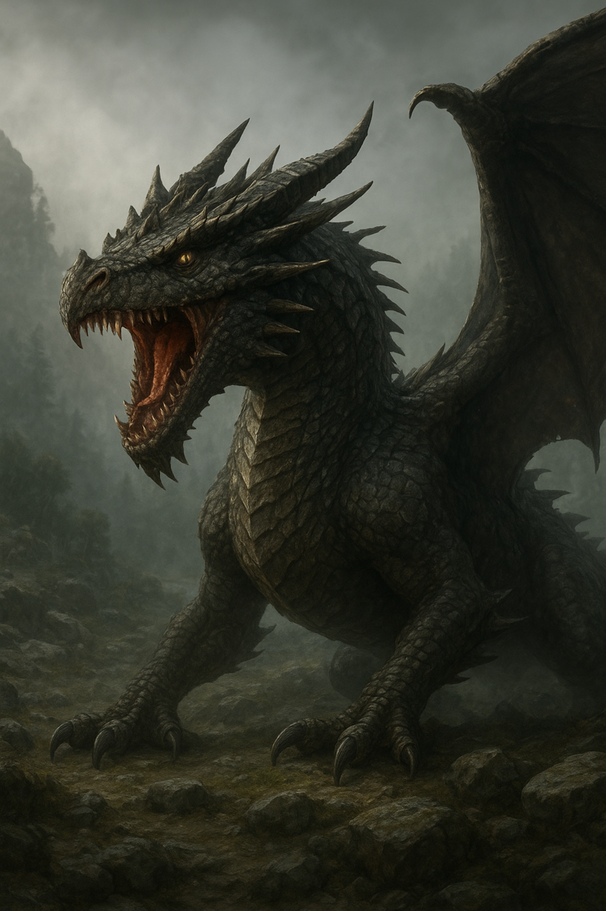

Balaurii – Ființe Mitice ale Pământului Românesc
Introducere
În mitologia românească, puține creaturi stârnesc atât de multă teamă, fascinație și respect precum balaurii. Prezenți în basme, legende și povești străvechi, balaurii nu sunt doar monștri înspăimântători, ci simboluri profunde ale haosului, ale răului, ale forțelor neîmblânzite ale naturii și, uneori, chiar ale transformării spirituale. În timp ce alte culturi au dragoni înaripați sau șerpi de dimensiuni colosale, în folclorul nostru balaurul este o creatură unică, rezultată din secole de tradiție, frică și imaginație populară.
De-a lungul timpului, balaurul a devenit mai mult decât un monstru: a devenit un test al eroilor, un prag între lumea celor vii și cea a simbolurilor arhaice, un adversar în fața căruia numai cei cu suflet curat, voință neclintită și curaj neînfricat pot rezista. În acest articol vom explora originile balaurilor, aparițiile lor în legende, semnificațiile spirituale și rolul lor în cultura românească.
Originea mitului balaurilor
Balaurii apar în tradițiile românești încă din epoca dacică. Unele teorii sugerează că mitul lor se leagă de cultul șarpelui, venerat ca simbol al regenerării, protecției și fertilității. În multe culturi indo-europene, șarpele era privit ca gardian al comorilor, al lumii de dincolo, al apei sau al timpului însuși. În spațiul carpato-danubiano-pontic, imaginea șarpelui s-a împletit cu simboluri solare și războinice, rezultând o creatură mult mai complexă: balaurul.
Cu trecerea timpului, influențele slavice, bizantine și apoi creștine au modelat mitul. Șarpele sacru al dacilor s-a transformat într-un monstru care răpea fete, provoca seceta sau aducea nenorociri, în contrast cu eroul luminos care îl înfrunta. Astfel, balaurul a devenit o încarnare a răului cosmic.
Descrierea balaurilor în folclor
Balaurii românești au mai multe trăsături specifice, diferite de dragonii occidentali. În general, balaurul:
- are trei, șapte sau nouă capete;
- are trup lung, șerpos și solzos;
- poate scuipa foc, fum sau gheață;
- este adesea lipsit de aripi (deși unele povești îi reprezintă și ca ființe zburătoare);
- are o inteligență diabolică și poate vorbi, negocia sau minți;
- are puteri magice: aduce furtuni, secetă sau atacă lumea oamenilor.
În basme, balaurul este întruchiparea răului, însă în anumite zone ale țării, el este privit și ca o forță a naturii care trebuie respectată, nu doar înfruntată.
Balaurii și eroii poporului
În poveștile românești, balaurii apar în opoziție directă cu eroul. Făt-Frumos, Greuceanu, Prâslea cel Voinic sau alți viteji se confruntă cu balaurii pentru a salva fete de împărat, pentru a reda lumii apa furată sau pentru a restabili echilibrul cosmic. Confruntarea cu balaurul este întotdeauna o probă inițiatică, o trecere simbolică din lumea profană în cea a maturității spirituale.
În timpul luptei, balaurul își folosește toate armele: capetele multiple, veninul, aripile uriașe sau flăcările devastatoare. Dar victoria eroului nu vine doar din forță fizică, ci din curățenia inimii și ajutorul forțelor luminoase: Sfânta Duminică, animale fantastice, zâne sau chiar obiecte fermecate.
Balaurii și simbolismul lor
Balaurul nu este doar un monstru. În folclorul românesc, el simbolizează:
- haosul primordial – lumea neordonată care precede creația;
- frica omului de necunoscut – mai ales frica de munți, ape adânci și pustiuri;
- puterea naturii – furtuni, foc, cutremure, secetă;
- obstacolul necesar în evoluția eroului;
- răul moral – lăcomia, mânia, trufia și egoismul.
În anumite regiuni, balaurul este privit ca un spirit al apelor. În Oltenia și Muntenia se vorbește despre „balauri de apă”, creaturi care trăiesc în lacuri adânci și pot provoca inundații dacă sunt supărate. În alte zone, balaurul apare ca un șarpe bătrân care, după o sută de ani, se transformă într-un balaur zburător.
Balaurul în tradiții și superstiții
În mitologia populară, balaurii nu trăiesc doar în basme. Ei apar și în tradiții transmise din bătrâni. Se spune că:
- un șarpe bătrân poate deveni balaur dacă este lăsat să crească fără a fi deranjat;
- în nopțile de sânziene, balaurii pot zbura întunecând cerul;
- balaurii încearcă adesea să fure soarele sau luna;
- în locurile unde cade trăsnetul, s-ar ascunde un balaur sub pământ;
- unele comori sunt păzite de balauri, iar aceștia dispar numai în fața unui om curajos.
Balauri în legende românești
Cele mai cunoscute povești cu balauri provin din basmele culese de Petre Ispirescu și Ion Creangă. În acestea, balaurii răpesc fete de împărat, pândesc la marginea lumii sau trăiesc în palat subteran. Greuceanu, de exemplu, se luptă cu un balaur cu trei capete pentru a readuce Soarele și Luna pe cer. În legendă, balaurii sunt cei care au furat luminătorii cerului, provocând întuneric pe pământ.
O altă poveste fascinantă este cea a lui Făt-Frumos și a balaurului cu șapte capete, care trăiește într-o insulă ascunsă printre nori. Fiecare cap al balaurului reprezintă o încercare: teama, minciuna, întunericul, moartea, trădarea, furia și dezordinea. Trecerea peste aceste încercări simbolizează evoluția spirituală a eroului.
Concluzie
Balaurii rămân, indiferent de timp, unele dintre cele mai complexe și captivante creaturi ale mitologiei românești. Ei ne amintesc de lupta perpetuă dintre lumină și întuneric, dintre bine și rău, dintre ordine și haos. În basme, balaurii sunt înfrânți, dar în mintea și simbolistica poporului, ei trăiesc încă, ca amintire a unor timpuri în care lumea era încă misterioasă, iar oamenii își explicau fenomenele naturii prin povești.
Astăzi, balaurul rămâne o figură iconică – prezent în artă, cultură, tradiții și chiar în simbolurile moderne, ca avatar al puterii și rezistenței. Iar în inimile copiilor, el trăiește în continuare, pregătit să fie înfruntat de un nou erou curajos.